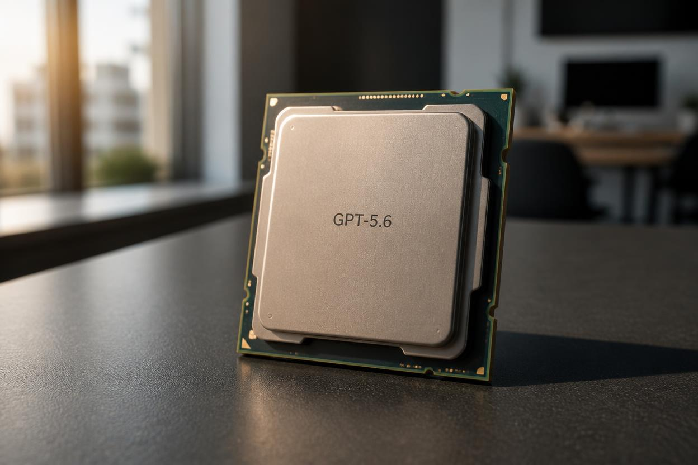

GPT-5.6 Leak 2026: Release Date, New Features, Benchmarks & How It Compares to Gemini 3.5 and Claude Opus 4

Table of Contents
- What the GPT-5.6 Leaks Are Reporting
- GPT-5.6 Release Date: Predicted Timeline
- GPT-5.6 New Features: Full Breakdown
- Reasoning Benchmarks: MATH, GPQA and More
- Why OpenAI Is Releasing Models So Fast in 2026
- GPT-5.6 vs Gemini 3.5 Flash vs Claude Opus 4
- Who Gets GPT-5.6 First — Access Tiers Explained
- Developer Guide: How to Prepare for GPT-5.6
- What OpenAI Isn't Telling Us
- Frequently Asked Questions
- Conclusion
The GPT-5.6 leak has ignited the AI community. Just 22 days after GPT-5.5 launched on April 23, 2026, multiple credible leakers are reporting that OpenAI is already preparing its next major model — and the timeline is astonishing. If the leaks are accurate, GPT-5.6 could arrive as early as mid-June 2026, marking the fastest major model turnaround in OpenAI's history and a fundamental shift in how the company competes in a market that is moving faster than ever before.
The context matters: Google launched Gemini 3.5 Flash at Google I/O on May 19, 2026, directly challenging OpenAI's dominance in reasoning and multimodal performance. Anthropic released Claude Opus 4 in early May with headline gains in long-context accuracy. OpenAI is responding — not by waiting for a scheduled annual release cycle, but by compressing its development timeline to a degree that would have seemed impossible just two years ago. This is an AI arms race, and GPT-5.6 is OpenAI's next weapon.
Key Takeaways
- Multiple leakers report GPT-5.6 is in final preparation, just weeks after GPT-5.5 launched on April 23, 2026.
- Predicted release: mid-to-late June 2026 — approximately 6–8 weeks after GPT-5.5, OpenAI's fastest major model cycle ever.
- Leaked improvements include double-digit gains on MATH and GPQA reasoning benchmarks over GPT-5.5.
- Additional improvements reportedly include an expanded context window, better agentic task handling, and enhanced multimodal capabilities.
- The accelerated cadence is a direct response to Google Gemini 3.5 Flash (May 19) and Claude Opus 4 (early May).
- OpenAI has not officially confirmed GPT-5.6 or provided a release date — all current information comes from leaks.
- Developers should begin building model-agnostic architectures immediately to avoid being locked into any single model version.
What the GPT-5.6 Leaks Are Reporting
The GPT-5.6 leak originated from multiple independent sources within the AI research community and has since been amplified across X (formerly Twitter), Reddit's r/MachineLearning, and several AI-focused newsletters. The convergence of reports from sources with no apparent connection to each other has given the leaks a degree of credibility that single-source reports typically lack.
The core claims across the leaks are consistent: OpenAI is preparing a model update significant enough to warrant a new version number — not a minor patch to GPT-5.5, but a meaningful capability jump that the company intends to deploy publicly. The specific claims being reported across the most credible sources include:
- Double-digit benchmark gains: Multiple leakers specifically cite improvements on MATH (the competitive mathematics benchmark) and GPQA (Graduate-Level Google-Proof Q&A, which tests advanced reasoning) — with reported gains described as double-digit percentages over GPT-5.5.
- Expanded context window: GPT-5.6 is reportedly adding significant context window capacity, building on GPT-5.5's already expanded window and targeting enterprise use cases that require processing very long documents or extended conversational histories.
- Improved agentic task performance: OpenAI's Operator product and agentic API capabilities are reportedly a focus area for GPT-5.6, with improvements to multi-step task execution, tool use accuracy, and autonomous workflow reliability.
- Enhanced multimodal processing: Image understanding, audio processing, and early video comprehension capabilities are all reported to be improved in GPT-5.6, helping OpenAI narrow any gap with Google's multimodal-first Gemini architecture.
Important Disclosure
All GPT-5.6 information in this article is based on leaks and unverified reports. OpenAI has not officially announced GPT-5.6 or confirmed any of the features, benchmarks, or release timeline described here. This article will be updated as official information becomes available.
GPT-5.6 Release Date: Predicted Timeline
Based on the convergence of leak reports and OpenAI's demonstrably accelerating release cadence, the most credible prediction for the GPT-5.6 release date is mid-to-late June 2026. Here is how that timeline is derived:
| Model | Release Date | Gap to Next Release |
|---|---|---|
| GPT-4 | March 2023 | ~12 months to GPT-4.5 |
| GPT-4.5 | February 2025 | ~7 months to GPT-5 |
| GPT-5 | September 2025 | ~4 months to GPT-5.5 |
| GPT-5.5 | April 23, 2026 | ~6–8 weeks to GPT-5.6 (predicted) |
| GPT-5.6 (predicted) | Mid-Late June 2026 | OpenAI's fastest major cycle ever |
The trend is unmistakable: OpenAI's release cycle has been compressing steadily, accelerating from annual releases during the GPT-4 era to what may now be a near-monthly cadence for significant model updates. The GPT-5.6 timeline — if accurate — would represent a complete transformation of how OpenAI operates, one that has enormous implications for developers, enterprises, and competitors.
Also Read
More AI & Technology Coverage →GPT-5.6 New Features: Full Breakdown
Based on the aggregate of leaked information, here is the most complete picture currently available of what GPT-5.6's new features are expected to include:
1. Reasoning and Logic Improvements
The most consistently reported improvement is in formal reasoning — specifically mathematical reasoning and multi-step logical deduction. Leakers citing internal benchmark comparisons describe double-digit gains over GPT-5.5 on MATH and GPQA, suggesting that GPT-5.6 represents a genuine capability leap rather than an incremental tuning update. If accurate, this would directly address one of the primary criticisms of large language models: inconsistent performance on structured reasoning tasks that require multi-step planning rather than pattern matching.
2. Expanded Context Window
GPT-5.5 already offered a substantially expanded context window compared to earlier GPT-4 era models. GPT-5.6 is reported to push this further — potentially moving into the territory of very long document analysis, cross-document synthesis, and extended conversation histories that do not degrade in quality as they grow. The specific token count has not been leaked with consistency, but multiple sources describe the improvement as meaningful for enterprise use cases.
3. Agentic Task Handling
OpenAI's agentic products — including Operator and the Assistants API — have been a major focus for the company in 2026. GPT-5.6 is reportedly optimized for the kinds of multi-step, tool-using, autonomous workflows that these products depend on. Leaks describe improvements in task planning accuracy, tool call reliability, error recovery in multi-step sequences, and the model's ability to maintain consistent goals across long autonomous workflows.
4. Multimodal Enhancements
With Google's Gemini architecture built multimodal-first, OpenAI has faced pressure to close the gap in image, audio, and video understanding. GPT-5.6 is reported to include meaningful improvements in image analysis depth and accuracy, improved audio transcription and understanding, and early-stage video comprehension capabilities that go beyond what GPT-5.5 currently offers.
Reasoning Benchmarks: MATH, GPQA and More
The two benchmarks most consistently cited in GPT-5.6 leaks are MATH and GPQA — and understanding what these benchmarks actually measure helps put the reported improvements in context.
MATH Benchmark: Developed by researchers at UC Berkeley, MATH is a collection of competition mathematics problems across subjects including algebra, geometry, number theory, counting and probability, and precalculus. It is specifically designed to be difficult for language models — requiring multi-step reasoning, symbolic manipulation, and the ability to work through complex problem structures rather than recall memorized answers. A double-digit percentage gain on MATH is a significant and meaningful improvement, not a marginal tweak.
GPQA (Graduate-Level Google-Proof Q&A): GPQA tests whether AI models can answer expert-level questions that Google cannot easily answer by searching the web — questions that require genuine domain understanding in biology, chemistry, physics, and other technical fields. High GPQA scores indicate that a model has internalized expert-level knowledge rather than just learned to retrieve surface-level information.
| Benchmark | What It Measures | GPT-5.5 Status | GPT-5.6 Leaked Improvement |
|---|---|---|---|
| MATH | Competition-level mathematical reasoning | Strong — exact score not public | Double-digit % gain (unconfirmed) |
| GPQA | Graduate-level expert Q&A across sciences | Strong — exact score not public | Double-digit % gain (unconfirmed) |
| MMLU | Massive Multitask Language Understanding | Near-ceiling for frontier models | Not specifically mentioned in leaks |
| HumanEval | Code generation accuracy | Strong baseline | Implied improvement via reasoning gains |
| Agentic Task Benchmarks | Multi-step autonomous task completion | Improving rapidly across industry | Specifically mentioned as a focus area |
Why OpenAI Is Releasing Models So Fast in 2026
The shift from OpenAI's historical 9–12 month release cycle to what may now be a 6–8 week cycle is not happening by accident. Three forces are driving this acceleration simultaneously, and understanding them is essential for anyone trying to follow where the AI market is headed.
Force 1: Google I/O 2026 and Gemini 3.5 Flash
Google's annual developer conference on May 19, 2026 was a turning point. Gemini 3.5 Flash debuted with headline claims about speed, reasoning efficiency, and multimodal throughput that directly challenged GPT-5.5's positioning. Google's ability to leverage its infrastructure advantage — TPUs, deep integration with Google Search, YouTube data for multimodal training — gives it unique capabilities that OpenAI cannot simply match by training a slightly better model. OpenAI's response is to move faster, releasing meaningful capability updates before Google can consolidate any benchmark lead.
Force 2: Claude Opus 4 and Anthropic's Safety-Performance Balance
Anthropic's Claude Opus 4, released in early May 2026, made significant claims about long-context accuracy and safety-aligned reasoning. For enterprise customers — OpenAI's most valuable market segment — Claude's combination of strong performance and Anthropic's Constitutional AI framework is a genuine competitive threat. GPT-5.6's reported focus on agentic task handling appears to be a direct response to Anthropic's positioning of Claude as the enterprise AI of choice for complex, autonomous workflows.
Force 3: The Underlying Infrastructure Race
OpenAI's partnership with Microsoft and its own data center investments have given the company access to compute resources that make rapid iteration feasible at a scale that was impossible three years ago. The limiting factor on model release cycles is no longer primarily training compute — it is evaluation, safety testing, and deployment infrastructure. OpenAI has been investing heavily in all three, and GPT-5.6's predicted timeline suggests those investments are paying off.
Risk for Developers
The accelerating release cycle creates a significant operational risk for developers who build applications tightly coupled to specific model versions. Applications designed specifically for GPT-5.5 may behave differently — or require updates — when GPT-5.6 becomes the default. Begin abstracting your model calls now if you have not already done so.
GPT-5.6 vs Gemini 3.5 Flash vs Claude Opus 4
Since GPT-5.6 has not yet launched, a full benchmark comparison is not possible. However, based on what is publicly known about Gemini 3.5 Flash and Claude Opus 4, combined with GPT-5.6 leak information, here is the most accurate competitive picture currently available:
| Capability | GPT-5.6 (Predicted) | Gemini 3.5 Flash | Claude Opus 4 |
|---|---|---|---|
| Release Date | Mid-Late June 2026 | May 19, 2026 | Early May 2026 |
| Reasoning (MATH/GPQA) | 🔵 Leading (double-digit gains leaked) | 🟡 Strong | 🟡 Strong |
| Long Context Accuracy | 🟡 Improved (expanded window) | 🟡 Strong | 🔵 Leading (Anthropic's strength) |
| Multimodal Performance | 🟡 Improved over GPT-5.5 | 🔵 Leading (native multimodal architecture) | 🟡 Solid |
| Agentic Task Handling | 🔵 Focus area — significant improvement leaked | 🟡 Improving | 🟡 Strong with Constitutional AI |
| API Speed / Throughput | 🟡 Standard OpenAI latency | 🔵 "Flash" optimized for speed | 🟡 Standard |
| Safety Alignment | 🟡 OpenAI RLHF approach | 🟡 Google's approach | 🔵 Leading (Constitutional AI) |
| ChatGPT Integration | 🔵 Native (ChatGPT Plus/Pro) | ❌ Not available in ChatGPT | ❌ Not available in ChatGPT |
The competitive picture that emerges is one of genuine three-way competition with no clear winner across all dimensions. Each model has distinct strengths: GPT-5.6 is expected to lead on reasoning and agentic tasks; Gemini 3.5 Flash leads on multimodal speed and throughput; Claude Opus 4 leads on long-context accuracy and safety alignment. For developers and enterprises, the practical question is which dimensions matter most for their specific use case — and the answer is increasingly that the best architectures are those that can leverage all three.
Who Gets GPT-5.6 First — Access Tiers Explained
OpenAI has not confirmed access tiers for GPT-5.6. Based on the rollout pattern for GPT-5.5 and earlier models, here is the most likely access sequence:
| Tier | Expected Access | Notes |
|---|---|---|
| ChatGPT Pro ($200/month) | Day 1 of launch | OpenAI's highest consumer tier gets first access to every new model |
| OpenAI API (pay-per-token) | Day 1 or within first week | Enterprise and developer access — critical for commercial use cases |
| ChatGPT Plus ($20/month) | 1–2 weeks after launch | Largest user base — typically receives access after initial rollout stabilizes |
| ChatGPT Free tier | Several weeks or months after launch | Free users typically receive limited or no access to the newest flagship model |
| Azure OpenAI (enterprise) | Varies — typically weeks after public launch | Enterprise deployments go through Azure with additional compliance and SLA requirements |
Developer Guide: How to Prepare for GPT-5.6
The accelerating model release cycle has fundamentally changed best practices for developers building on top of large language models. Here is a practical guide to preparing for GPT-5.6 — and for the even faster release cycles that may follow.
1. Build model-agnostic architecture immediately
The single most important step any developer can take right now is to abstract their model API calls behind an interface layer. Rather than hardcoding model="gpt-5.5" throughout your application, define a configuration variable or service class that wraps your model calls. This allows you to upgrade to GPT-5.6 — or switch between OpenAI, Anthropic, and Google APIs — by changing one configuration, not rewriting your entire application.
2. Pin your production applications to specific model versions
OpenAI's API allows developers to pin to specific model versions (e.g., gpt-5.5-0423) rather than using the rolling alias (gpt-5.5). Always pin production applications to a specific version. When GPT-5.6 launches, test it thoroughly in a staging environment before migrating production traffic. The model may behave differently in ways that break existing prompts or output parsing logic.
3. Update your evaluation frameworks now
If you have automated evaluation frameworks that test your application's outputs against expected results, run them against GPT-5.6 as soon as API access becomes available. Double-digit benchmark improvements sometimes come with behavior changes in edge cases that your production prompts may trigger differently.
4. Plan for pricing changes
New model releases from OpenAI are often accompanied by API pricing changes. GPT-5.6 may be priced differently from GPT-5.5, and the cost impact on high-volume applications can be significant. Build cost monitoring into your architecture now so you can track the impact of any pricing changes at launch.
Developer Tip
Use OpenAI's model versioning strategy: always deploy production on a pinned model version (e.g., gpt-5.5-0423) and test new models (GPT-5.6) in staging first. This protects you from unexpected behavior changes when OpenAI updates the rolling alias.
What OpenAI Isn't Telling Us
OpenAI has said nothing publicly about GPT-5.6. No blog post, no X thread from Sam Altman, no API documentation update — total silence. This is not unusual for pre-release model development, but the gap between what leakers are reporting and what OpenAI is communicating raises several questions worth considering:
Are the benchmark gains real, or cherry-picked? Benchmark reporting in the AI industry has faced criticism for selectively highlighting metrics where a model performs well while omitting those where it underperforms. Even if GPT-5.6 delivers double-digit gains on MATH and GPQA, the full benchmark picture may show trade-offs — areas where performance declined or stayed flat compared to GPT-5.5.
How much of this is competitive signaling? The timing of these leaks — arriving days after Google I/O 2026 and in the wake of Claude Opus 4's release — raises the possibility that some of the information in circulation is being deliberately seeded to shape market perception and prevent enterprise customers from making long-term commitments to competitor platforms before GPT-5.6 launches.
What happened to safety evaluations? OpenAI's previous major model releases have been accompanied by detailed safety evaluation reports (the "system card" documents). A 6–8 week development and deployment cycle for a model as capable as GPT-5.6 is reportedly expected to be raises questions about whether the company's safety evaluation processes are keeping pace with its development speed.
Frequently Asked Questions
Q: What is the GPT-5.6 leak and what does it reveal?
A: Multiple independent leakers report OpenAI is preparing GPT-5.6 just weeks after GPT-5.5 launched on April 23, 2026. Leaked information points to double-digit MATH and GPQA benchmark gains, an expanded context window, improved agentic task handling, and enhanced multimodal capabilities. The accelerated timeline is interpreted as a competitive response to Gemini 3.5 Flash and Claude Opus 4.
Q: When will GPT-5.6 be released?
A: Based on leak convergence and OpenAI's current cadence, mid-to-late June 2026 is the most credible prediction — approximately 6 to 8 weeks after GPT-5.5. This would be OpenAI's fastest major model turnaround in the company's history.
Q: What are the key differences between GPT-5.6 and GPT-5.5?
A: Leaks describe double-digit percentage gains on MATH and GPQA reasoning benchmarks, expanded context window capacity, significantly improved agentic and multi-step task handling, and enhanced multimodal image and audio processing. OpenAI has not confirmed any of these figures.
Q: Why is OpenAI releasing models so quickly in 2026?
A: Intense competitive pressure. Google launched Gemini 3.5 Flash at I/O on May 19 with strong multimodal and speed claims. Anthropic released Claude Opus 4 in early May with long-context leadership. OpenAI is compressing its release cycle from 9–12 months to 6–8 weeks to prevent competitors from establishing benchmark leadership between major OpenAI releases.
Q: How does GPT-5.6 compare to Gemini 3.5 Flash and Claude Opus 4?
A: GPT-5.6 is predicted to lead on reasoning (MATH, GPQA) and agentic tasks. Gemini 3.5 Flash leads on multimodal throughput and speed. Claude Opus 4 leads on long-context accuracy and safety alignment. Each model has distinct strengths; developers should use whichever best fits their specific use case — or build model-agnostic architectures that can leverage all three.
Q: Will GPT-5.6 be available in ChatGPT Plus?
A: Unconfirmed. Based on GPT-5.5's rollout pattern, ChatGPT Pro and API subscribers will likely get access first, with Plus users following 1–2 weeks later. Free tier access at launch is unlikely.
Q: Should developers build on GPT-5.6 or wait?
A: Build model-agnostic now. Abstract your model calls behind a configuration interface so you can switch between GPT-5.5, GPT-5.6, Gemini 3.5, and Claude Opus 4 via API without rewriting your application. With release cycles this fast, betting exclusively on one model version is an increasingly risky architectural decision.
Conclusion
The GPT-5.6 leak is not just a story about a single model update. It is a story about the complete transformation of how frontier AI models are developed, deployed, and competed over. The shift from annual releases to potentially monthly capability jumps represents a fundamental change in the economics and strategy of AI development — one with enormous implications for developers, enterprises, researchers, and anyone who relies on these systems.
If the leaks are accurate — double-digit gains on MATH and GPQA, expanded context, better agentic performance, enhanced multimodal — then GPT-5.6 will be a genuinely important model, not just a marketing update. Combined with the competitive context created by Gemini 3.5 Flash and Claude Opus 4, the mid-2026 AI landscape is shaping up to be one of the most consequential periods in the field's history.
What OpenAI is not saying publicly may matter as much as what the leaks are reporting. The questions about safety evaluation timelines, cherry-picked benchmarks, and competitive signaling deserve attention alongside the headline capability claims. As always with AI model releases, the official launch — with its system card, full benchmark suite, and pricing details — will tell the complete story that leaks can only partially reveal.
This page will be updated with official information as soon as OpenAI makes any announcement about GPT-5.6.
Leave a Comment